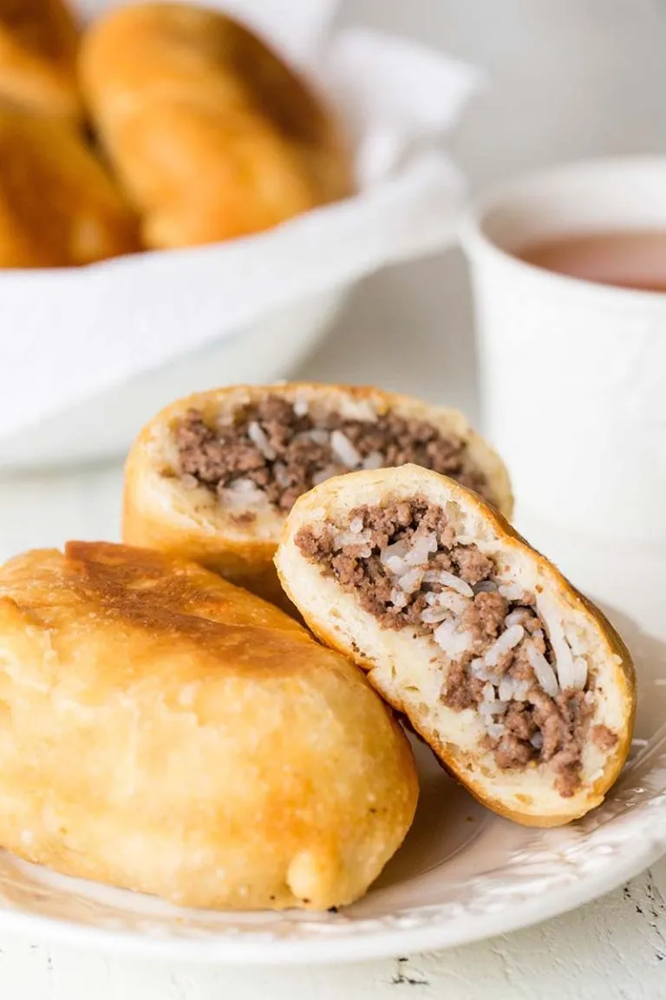

Document
Piroshki

A Russian Family Favorite
A classic piroshki is a savory Russian pastry made from a soft, yeasted dough and filled with a variety of ingredients. Traditionally, it features a flavorful filling of seasoned meat (like beef or pork), onions, and sometimes mushrooms or rice. The dough is usually slightly sweet and tender, creating a perfect balance with the savory filling. Piroshki are typically baked until golden brown, offering a delightful, warm bite that is both hearty and comforting.
Time to make piroshki that even Babushka would trade her secret recipe for!
Ingredients
For the Dough:
- 2 ¼ teaspoons (1 packet) active dry yeast
- 1 cup warm milk
- ¼ cup sugar
- ¼ cup unsalted butter, melted
- 1 large egg
- 3 ½ cups all-purpose flour
- 1 teaspoon salt
For the Filling:
- 1 lb ground beef or pork
- 1 medium onion, finely chopped
- 1 cup mushrooms, finely chopped (optional)
- 1 teaspoon salt
- ½ teaspoon black pepper
- ½ teaspoon paprika
- 1 tablespoon vegetable oil
- 1 egg (for egg wash)
Instructions
Prepare the Dough:
- In a small bowl, dissolve the yeast in warm milk with a pinch of sugar. Let it sit for 5-10 minutes, until frothy.
- In a large mixing bowl, combine the remaining sugar, melted butter, egg, and salt. Add the yeast mixture and mix well.
- Gradually add the flour, mixing until the dough comes together.
- Knead the dough on a floured surface for about 5-7 minutes, until smooth and elastic.
- Place the dough in a greased bowl, cover it with a clean cloth, and let it rise in a warm place for about 1-1.5 hours, until doubled in size.
Prepare the Filling:
- Heat oil in a skillet over medium heat. Add onions and cook until translucent.
- Add the ground meat and cook until browned. Drain excess fat if necessary.
- Stir in the mushrooms (if using), salt, pepper, and paprika. Cook for another 5 minutes, then let the mixture cool.
Assemble the Piroshki:
- Preheat your oven to 375°F (190°C).
- Punch down the dough and divide it into 12-16 equal pieces.
- Roll each piece into a small circle, about 4 inches in diameter.
- Place a spoonful of filling in the center of each circle.
- Fold the dough over the filling to create a half-moon shape, pinching the edges to seal.
- Place the piroshki on a baking sheet lined with parchment paper. Brush each with a beaten egg for a golden finish.
Bake:
- Bake in the preheated oven for 20-25 minutes, or until golden brown.
Cool and Serve:
- Let the piroshki cool slightly before serving. Enjoy warm or at room temperature!
Serve them with a dollop of sour cream or a simple salad for a complete meal. Enjoy every bite of these delightful pastries, savoring the rich flavors and crispy texture!